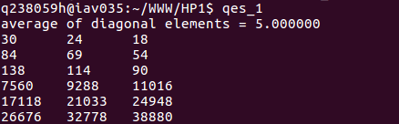

項目
問１
次の行列の積に関するプログラムで使われる関数をC言語で作成せよ。
このプログラムは、要素として int 型の値を持つ 3 × 3 行列に燗する操作を行っている。
2つの関数、関数 matAvrDiagElements と関数 mat4thPower のみ作成せよ。関数 matProduct は作成済みとする。
関数 matAvrDiagElements は
、第1引数の行列からその行列の対角要素(3個の要素)の平均値を求めて返り値として返す
。関数 matProduct は
、第1引数の行列(A)と第2引数の行列(B)の積(AB)の結果を第3引数の行列に格納する。関数 mat4thPower は、第1引数の行列を4乗した結果を第2引数の行列に格納する
。なお、必要であればこれら3つの関数はお互いに内部で使用しても構わない
。ただし、作成する関数はメイン関数内に示している行列の各要素の値が変わっても
、正しく動作するように作成すること実行した結果、画面表示はつぎのようになる。
出力結果
コード全文
#include <stdio.h>
double matAvrDiagElements(int a[3][3]);
void matProduct(int a[3][3], int b[3][3], int c[3][3]);
void mat4thPower(int a[3][3], int d[3][3]);
int main(int arc, char *argv[]){
int a[3][3] = {{1,2,3},{4,5,6},{7,8,9}};
int b[3][3] = {{9,8,7},{6,5,4},{3,2,1}};
double av;
int c[3][3], d[3][3];
int i,j;
av = matAvrDiagElements(a);
printf("average of diagonal elements = %f \n",av);
matProduct(a,b,c);
for(i=0;i<3;i++){
for(j=0;j<3;j++){
printf("%d\t",c[i][j]);
}
printf("\n");
}
mat4thPower(a,d);
for(i=0;i<3;i++){
for(j=0;j<3;j++){
printf("%d\t",d[i][j]);
}
printf("\n");
}
return 0;
}
double matAvrDiagElements(int a[3][3]){
return (double)((a[0][0]+a[1][1]+a[2][2])/3.0);
}
void matProduct(int a[3][3], int b[3][3], int c[3][3]){
int i;
int j;
int k;
int ans=0;
int temp[3][3];
for(i=0;i<3;i++){
for(k=0;k<3;k++){
for(j=0;j<3;j++){
ans+=a[i][j]*b[j][k];
}
temp[i][k]=ans;
ans=0;
}
}
for(i=0;i<3;i++){
for(j=0;j<3;j++){
c[i][j]=temp[i][j];
}
}
}
void mat4thPower(int a[3][3], int d[3][3]){
int i;
int j;
for(i=0;i<3;i++){
for(j=0;j<3;j++){
d[i][j]=a[i][j];
}
}
for(i=0;i<3;i++){
matProduct(d,a,d);
}
}
回答
| 関数名 | コード |
|---|---|
| matAvrDiagElements | double matAvrDiagElements(int a[3][3]){ return (double)((a[0][0]+a[1][1]+a[2][2])/3.0); } |
| mat4thPower | void mat4thPower(int a[3][3], int d[3][3]){ int i; int j; for(i=0;i<3;i++){ for(j=0;j<3;j++){ d[i][j]=a[i][j]; } } for(i=0;i<3;i++){ matProduct(d,a,d); } } |
解説
- matAvrDiagElement
- mat4thPower
送られてきた配列aのa[0][0],a[1][1],a[2][2]をすべて足してそれを3で割ったものを返している。
まずdの中にaと同じものをいれるために int i と int jを定義し、for 文で d の中に a を入れる。そのdに matProduct を使用し、3度 a を d にかける事で4乗をしている。